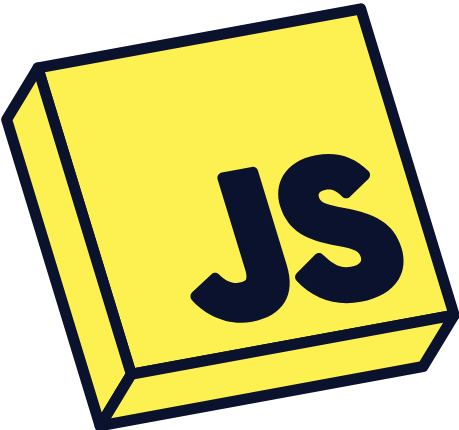
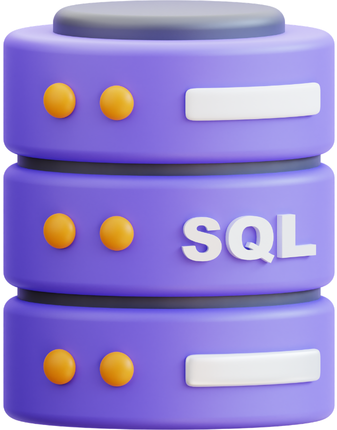
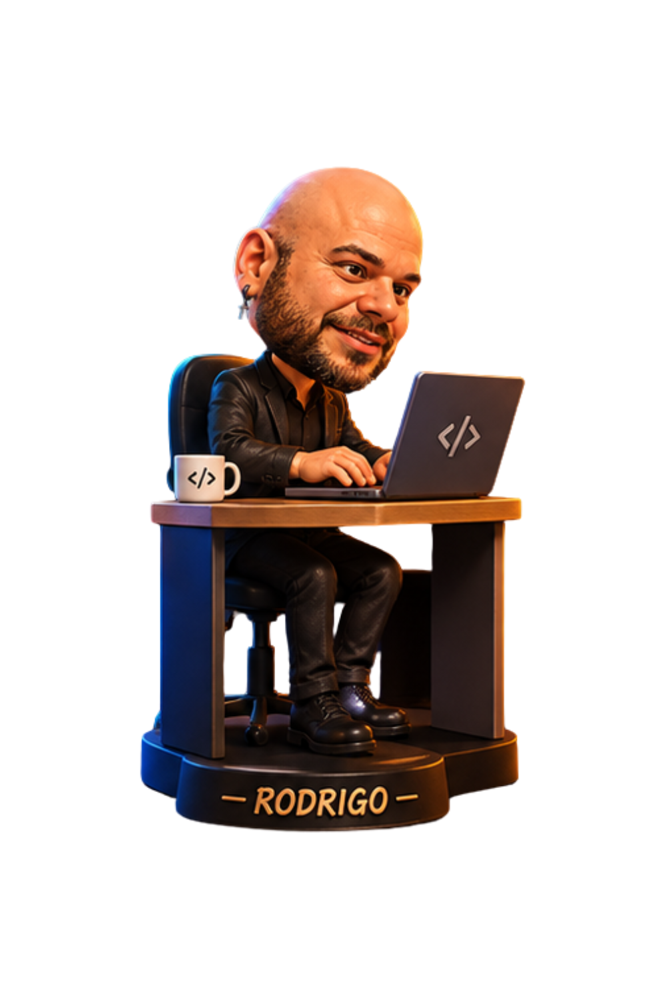

Web / servicios digitales
Codexa
Un espacio digital para acercar tecnología, desarrollo web y automatización a negocios y personas.
DESARROLLADOR WEB
Diseño y desarrollo experiencias web funcionales, cuidando tanto lo que pasa detrás del código como lo que ve y usa cada persona.


UN POCO SOBRE MÍ
Me gusta entender cómo funcionan las cosas, encontrar soluciones y convertir buenas ideas en algo concreto.
Soy desarrollador web y disfruto el proceso completo: pensar cómo debería funcionar una aplicación, construirla y prestar atención a esos detalles que hacen que usarla sea simple y agradable.
HERRAMIENTAS
Trabajo con tecnologías que me permiten desarrollar interfaces, conectar datos y crear aplicaciones completas.
Interactividad, lógica y desarrollo de aplicaciones.
Interfaces por componentes y experiencias dinámicas.
Consultas, relaciones y gestión de información.
Backend, APIs y lógica del lado del servidor.
Control de versiones y trabajo con repositorios.
Estructura, diseño responsive y accesibilidad.

TRABAJO REAL
Proyectos personales y desarrollos donde pongo en práctica distintas herramientas y formas de resolver problemas.
Web / servicios digitales
Un espacio digital para acercar tecnología, desarrollo web y automatización a negocios y personas.
E-commerce
Tienda online con catálogo, navegación y una experiencia de compra simple.
E-commerce
Sitio web orientado a la venta de hamburguesas y presentación de productos.
Proyecto integrador
Plataforma de comercio electrónico desarrollada como proyecto integrador.
Herramienta de gestión
Aplicación para cargar presupuestos y gestionarlos mediante operaciones CRUD.
Aplicación de gestión
Herramienta de gestión enfocada en organizar información y procesos.
Aplicación de gestión
Desarrollo de una herramienta para organizar información y hacer seguimiento.
Práctica frontend
Proyecto práctico para trabajar lógica e interacciones con JavaScript.
Recursos visuales
Repositorio de recursos gráficos utilizados en distintos proyectos.
¿TENÉS UNA IDEA?
Si tenés un proyecto en mente, querés trabajar conmigo o simplemente intercambiar ideas, me gustaría saber de vos.
Contactarme en GitHub